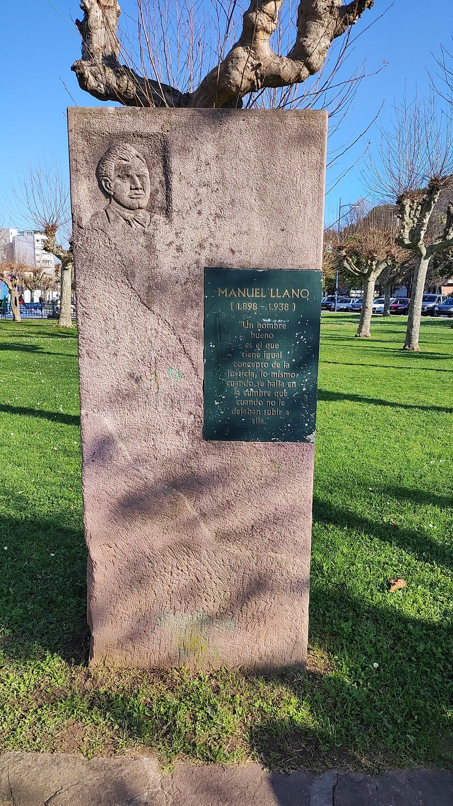

La tradición oral y su transmisión
Criterios: PC 4.2, PC 4.3, PC 1.1
🤔 Pienso5 min
Qué hago aquí: Piensa un momento y contesta con lo que ya sabes. No pasa nada si no lo sabes: es para empezar.
Si una historia pasa de boca en boca durante doscientos años, ¿crees que llega igual? ¿Qué cambia y qué se mantiene?
📖 Leo y aprendo15 min
Qué hago aquí: Lee despacio, mira los dibujos y los ejemplos, y quédate con la idea clave del final.
La tradición oral es todo lo que se transmite hablando: cuentos, leyendas, canciones, refranes, oraciones, adivinanzas. Es patrimonio inmaterial y es muy frágil: si se deja de contar, se pierde.

Foto: Autor desconocido · CC BY-SA 4.0 · Homenaje a Manuel Lano.jpg
✏️ Hago25 min
Qué hago aquí: Haz las actividades en orden. Empieza siempre por las básicas.
Explica qué es la tradición oral y por qué es patrimonio inmaterial. ¿Por qué es más frágil que un monumento?
Explica qué eran las hilas y por qué se dice que eran la «escuela» de la tradición oral. ¿Qué ha sustituido hoy a las hilas?
Compara el trabajo de Manuel Llano y el de García-Lomas: época, forma de recoger los relatos y tipo de libro.
Explica qué cambia y qué se mantiene en una historia que pasa de boca en boca. Haz la prueba en clase con el juego del «teléfono»: anota la frase inicial y la final.
Diseña un protocolo para grabar a un mayor: preparación, preguntas, permiso, datos que hay que anotar y dónde guardar la grabación. Explica por qué cada paso es necesario.
La Unesco dice que el patrimonio inmaterial es «patrimonio vivo». Explica qué significa y qué diferencia hay entre conservar un relato en un archivo y mantenerlo vivo.
Recoge tres refranes sobre el tiempo o el campo que se digan en tu familia. Explica su significado y si tienen base científica.
🚀 Amplío (si quieres saber más)
Qué hago aquí: ¿Has terminado? Lee la curiosidad o elige el reto. Es voluntario.
Graba (con permiso) a una persona mayor contando una historia, una canción o un recuerdo de su infancia. Transcríbelo, añade una ficha con los datos (nombre, edad, pueblo, fecha) y escribe qué palabras o costumbres aparecen que hoy ya no se usan.
✅ Compruebo5 min
Qué hago aquí: Contesta sin mirar la ficha y marca cómo lo llevas.